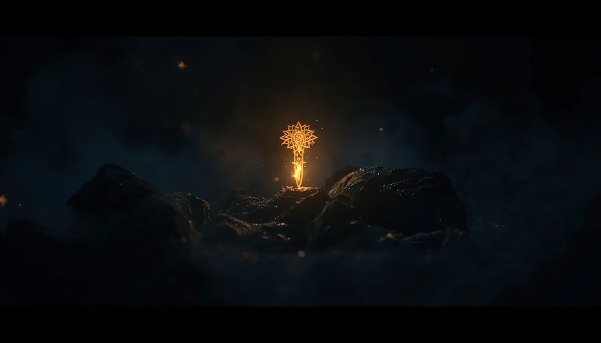

Sección en desarrollo
Estamos trabajando con todo el rigor, el cuidado y la sensibilidad que este tema merece para ofrecerte una guía completa, basada en fuentes oficiales y redactada con la cercanía que nos caracteriza.
“Cada contenido requiere su tiempo de gestación para asegurar que aporte un valor real y humano a quienes nos visitan.”
Muy pronto habilitaremos este espacio con toda la información necesaria. Gracias por tu paciencia y confianza.
➔ Volver al inicio